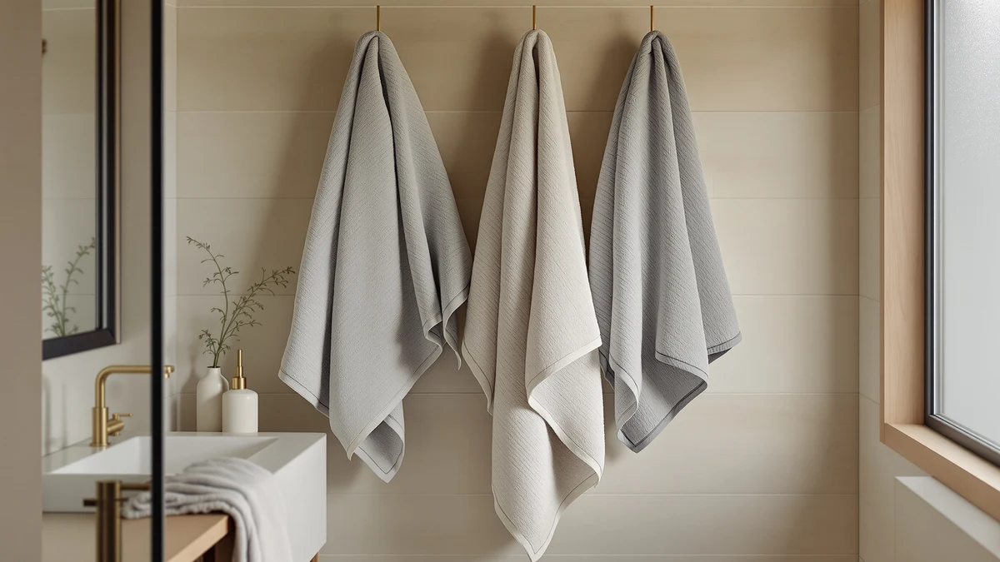

Corporate Hills CH Bath Towels Review (2026): Worth It?
Prices and picks verified as of November 2026. Independent, reader-supported reviews.


Quick Answer
This Corporate Hills CH Bath Towels review finds the Corporate Hills CH White Bath the stronger pick if you want a single 100% cotton towel with a confirmed size, 22 x 44 inches, rather than a towel set or an oversized bath sheet. TEXCRAFT's Large Bath Towels Set and the two Utopia Towels Jumbo Bath Sheets listings all cost the same $34.99, so the real choice here is format, not price.
Our pick: Corporate Hills CH White Bath, $34.99 Check Price on Amazon
Bottom line: our top pick is the Corporate Hills CH White Bath Towels Bulk Pack of 12 at $34.99.
Things to Know Before You Buy
- All four products compared in this Corporate Hills CH Bath Towels review are priced at $34.99, so price alone will not decide which one to buy.
- The Corporate Hills CH White Bath is a single 100% cotton bath towel sized 22 x 44 inches, the only product in this comparison with a published material and size spec.
- The TEXCRAFT Large Bath Towels Set bundles multiple towels under one listing, a different format from the single Corporate Hills towel.
- Utopia Towels lists its Jumbo Bath Sheets under two separate ASINs at the same price, so check the product photos before choosing between them.
- None of the four products in this comparison carry a published star rating or review count in the data we compared, so this review relies on listed specs and pricing rather than an aggregate rating.
This Corporate Hills CH Bath Towels review compares the Corporate Hills CH White Bath, a single 100% cotton towel sized 22 x 44 inches, against three alternatives from TEXCRAFT and Utopia Towels that all share its $34.99 price. Shoppers researching a Corporate Hills CH Bath Towels review usually want to know whether a single branded bath towel can hold up against a full towel set or an oversized bath sheet at the same price, and that comparison is what this review sets out to answer.
Corporate Hills' towel stands out mainly because it is the only one of the four with a clearly listed material and size spec. TEXCRAFT's Large Bath Towels Set and both Utopia Towels Jumbo Bath Sheets listings skip that level of product detail, leaving buyers to judge them mostly on name, photos, and price. We compared what each brand actually publishes about its product, not marketing copy, and weighed that against the identical $34.99 price point all four share.
Why You Should Trust Us
We built this Corporate Hills CH Bath Towels review by comparing the material, size, and pricing each brand lists for its product rather than relying on marketing descriptions. Ilane Tall covers bathroom textiles for Best Bath Towels, focusing on how published specs hold up against the price a shopper actually pays. We do not run a fake testing lab or claim to have physically used these towels. Every comparison in this review comes from the specs and pricing published for each listing.
Our Research Experience
Rather than run these towels through a physical trial, we researched how each listing compares on the details that actually affect a towel purchase: material, size, set format, and price. For a Corporate Hills CH Bath Towels review like this one, that means checking whether a single branded cotton towel with a published 22 x 44 inch size beats a towel set or an oversized bath sheet sold without the same spec detail, instead of assuming a bigger-sounding product name wins by default. Price did not separate these four options, since all of them list at $34.99, so the comparison comes down to what each brand actually discloses about its product.
Overview & Specs

Corporate Hills CH White Bath
What we like
- 100% cotton construction confirmed in the listed spec
- Published 22 x 44 inch size, the only product in this comparison with that detail listed
- Priced the same as three alternatives that offer less spec detail
Flaws but not dealbreakers
- Sold as a single towel, not a set, so you will need more than one for a full bathroom
- No published star rating or review count to check consistency against
| Material | 100% cotton |
| Size | Bath Towel 22"x44" |
The Corporate Hills CH White Bath is the focus of this Corporate Hills CH Bath Towels review because it is the only one of the four products compared here with a clearly published material and size spec. The listing specifies 100% cotton construction in a 22 x 44 inch size, the standard footprint for a single bath towel. That level of detail matters more than it looks, since TEXCRAFT's Large Bath Towels Set and both Utopia Towels Jumbo Bath Sheets listings describe their products mainly through the name and photos, without the same spec line. For a shopper comparing four listings at an identical price, the product with a confirmed material and size gives you something concrete to check against, rather than a name that only implies a size or a piece count.
At $34.99, the Corporate Hills CH White Bath costs exactly the same as TEXCRAFT's set and both Utopia Towels Jumbo Bath Sheets listings, so price is not what separates these four options. What separates them is format. Corporate Hills sells a single standard bath towel, while TEXCRAFT's name points to a multi-towel set and Utopia Towels' name points to an oversized bath sheet format, which typically runs larger than a standard bath towel. If you specifically need one dependable, clearly specced cotton towel rather than a set or an oversized sheet, the Corporate Hills option gives you the clearest picture of what you are buying before you check out.
What We Liked
The clearest strength in this Corporate Hills CH Bath Towels review is the spec sheet. The Corporate Hills CH White Bath lists 100% cotton construction and a 22 x 44 inch size, giving buyers a confirmed material and dimension to compare against the other three listings. Neither TEXCRAFT's Large Bath Towels Set nor the two Utopia Towels Jumbo Bath Sheets listings publish that same level of detail in the data we compared.
We also like that the price stays identical across all four products. At $34.99 apiece, you are not paying extra for Corporate Hills' clearer spec sheet, which makes this a straightforward comparison on information alone rather than a tradeoff between price and detail.
TEXCRAFT and Utopia Towels hold their own on format. TEXCRAFT's set-oriented name suggests more than one towel per purchase, and Utopia Towels' "Jumbo Bath Sheets" framing points to a larger towel than the standard size Corporate Hills lists, which matters if your bathroom calls for bigger coverage.
What Could Be Better
The main limitation in this Corporate Hills CH Bath Towels review is that Corporate Hills sells a single towel, not a set. If you need to outfit a full bathroom or replace several towels at once, you will need to buy more than one unit, which changes the real cost of furnishing a bathroom compared with a multi-piece listing like TEXCRAFT's.
None of the four products compared here carry a published star rating or review count in the data we checked, so this review leans on listed specs and pricing rather than feedback from other buyers. That gap applies equally to Corporate Hills, TEXCRAFT, and both Utopia Towels listings, so it does not favor any single option over another.
Who Is It For?
This Corporate Hills CH Bath Towels review points to one clear buyer for the Corporate Hills option: someone who wants a single, clearly specced 100% cotton towel and is comfortable buying more than one to cover a full bathroom. The published 22 x 44 inch size and material make it easier to know exactly what you are getting before you add it to your cart.
If you need several towels in one purchase, TEXCRAFT's Large Bath Towels Set points toward a multi-piece format at the same $34.99 price, though the listing does not break out an exact piece count in the data we compared. And if you want a towel that runs larger than the standard size, Utopia Towels' Jumbo Bath Sheets, listed under two separate ASINs at the same price, lean toward that bigger format instead.
Buyers who care most about confirmed product details should lean toward Corporate Hills, since it is the only listing here with both a material and a size spec attached. Buyers who care more about format, set size, or sheet dimensions should compare photos and titles across TEXCRAFT and Utopia Towels before deciding, since neither publishes the same level of spec detail in this comparison.
Alternatives to Consider
If a single standard bath towel is not the right format for your bathroom, this Corporate Hills CH Bath Towels review also covers three alternatives from TEXCRAFT and Utopia Towels, all priced at $34.99.

Also Great
TEXCRAFT Large Bath Towels Set
A set-oriented bath towel listing priced the same as Corporate Hills, for buyers who want more than one towel in a single purchase.
$34.99
Check Price on Amazon
Also Great
Utopia Towels Jumbo Bath Sheets
An oversized bath sheet listing from Utopia Towels, for buyers who want a towel larger than the standard size Corporate Hills lists.
$34.99
Check Price on Amazon
Also Great
Utopia Towels Jumbo Bath Sheets
A second Utopia Towels Jumbo Bath Sheets listing at the same price, worth checking against the first before you choose between them.
$34.99
Check Price on AmazonIs the Corporate Hills CH White Bath actually 100% cotton?
Yes.
How does the price compare to the alternatives?
All four products in this Corporate Hills CH Bath Towels review are priced at $34.99, including TEXCRAFT's Large Bath Towels Set and both Utopia Towels Jumbo Bath Sheets listings.
Frequently Asked Questions
Is the Corporate Hills CH White Bath actually 100% cotton?
How does the price compare to the alternatives?
What's the difference between the Corporate Hills CH White Bath and the Utopia Towels Jumbo Bath Sheets?
Final Verdict
This Corporate Hills CH Bath Towels review comes down to spec detail more than price. Corporate Hills is the pick for buyers who want a single, clearly specced 100% cotton towel at 22 x 44 inches, even though all three alternatives share its exact $34.99 price. If you need multiple towels in one purchase, TEXCRAFT's set-oriented listing is worth a look, and if you want a bigger towel, Utopia Towels' Jumbo Bath Sheets lean toward that larger format. But for a straightforward, well-documented cotton bath towel, Corporate Hills is the listing to buy.